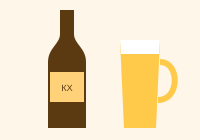

ТОВ «Кришталевий Хміль» — виробництво слабоалкогольних напоїв
Сторінка загальної інформації про підприємствоТОВ «Кришталевий Хміль» — віртуальне (вигадане для навчального проєкту) підприємство, засноване у 2012 році в Чернівцях. Ми варимо пиво, виготовляємо сидр, перрі та медовуху за класичними рецептами з буковинської сировини. Продукція має міцність від 4 до 7 % об.
Підприємство працює відповідно до вимог ДСТУ та системи безпечності харчових продуктів HACCP. Усі напої виготовляються без штучних ароматизаторів.

Основні напрямки діяльності
1. Виробництво світлого і темного пива. 2. Виготовлення яблучного та грушевого сидру. 3. Виробництво медовухи й слабоалкогольних коктейлів. 4. Оптові поставки у мережі магазинів і ресторанів.
Слово засновника
Добрий напій — це терпіння, чиста вода і повага до традицій. Ми не поспішаємо:
кожна партія сидру дозріває щонайменше три місяці.
Технологічна картка партії
Так виглядає запис про партію в журналі лабораторії (вивід програми обліку):
BATCH KH-2026-114
PRODUCT Cider "Yablunevyi Sad"
ABV 5.0 %
VOLUME 12 000 l
BEST BEFORE 12 months
STATUS PASSED
Щоб отримати звіт, лаборант вводить команду report --batch KH-2026-114 --format pdf.
Контактна інформація
ТОВ «Кришталевий Хміль» (вигадане підприємство)Поштова адреса: 58000, м. Чернівці, вул. Пивоварна, 14
Телефон: (0372) 00-14-14, факс: (0372) 00-14-15
Загальна інформація: info@khmil.example
Відділ збуту: sale@khmil.example
 Надмірне вживання алкоголю шкодить вашому здоров'ю. Продаж особам до 18 років заборонено.
Надмірне вживання алкоголю шкодить вашому здоров'ю. Продаж особам до 18 років заборонено.